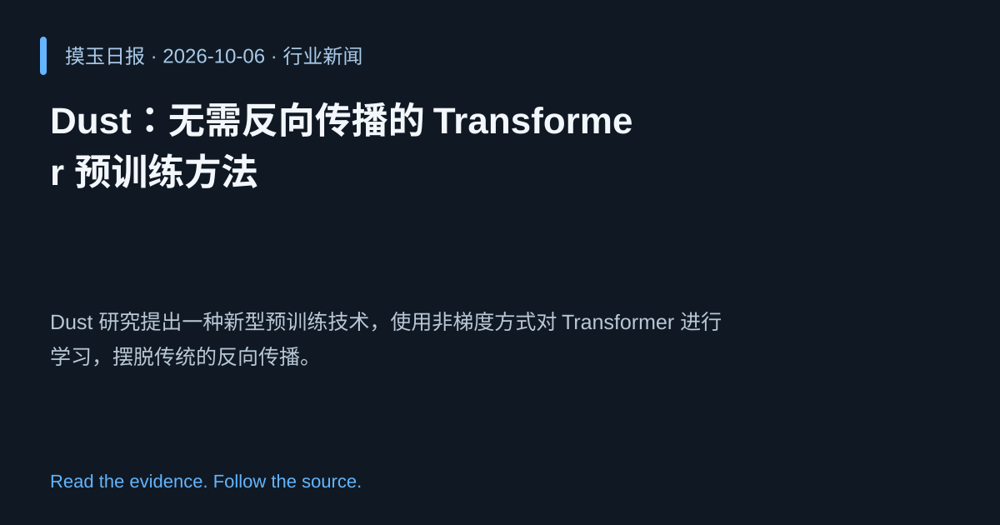

2026-10-06 · Asia/Shanghai · 行业新闻 · #4
Dust：无需反向传播的 Transformer 预训练方法
Dust: Pretraining Transformers Without Backpropagation
Dust 研究提出一种新型预训练技术，使用非梯度方式对 Transformer 进行学习，摆脱传统的反向传播。
为什么值得关注
有望显著降低算力成本，提升大模型训练的可扩展性。
- 通过替代学习机制实现参数更新。
- 减少 GPU/TPU 计算需求，提高能效。
- 为未来更大规模模型提供新路径。

热度 56.8 / 100；排名与评分保留该期记录。